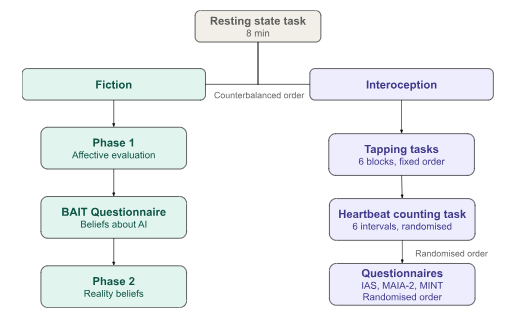
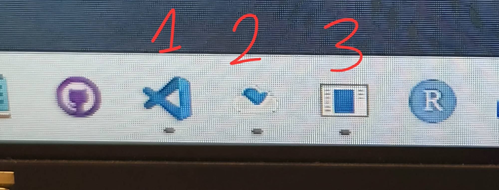
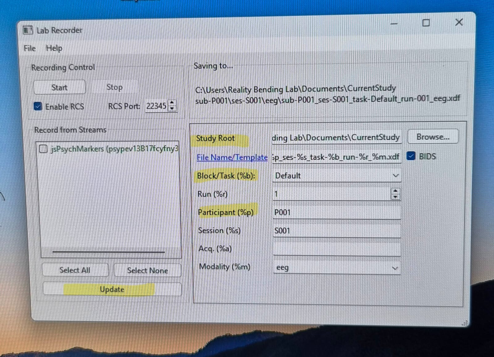
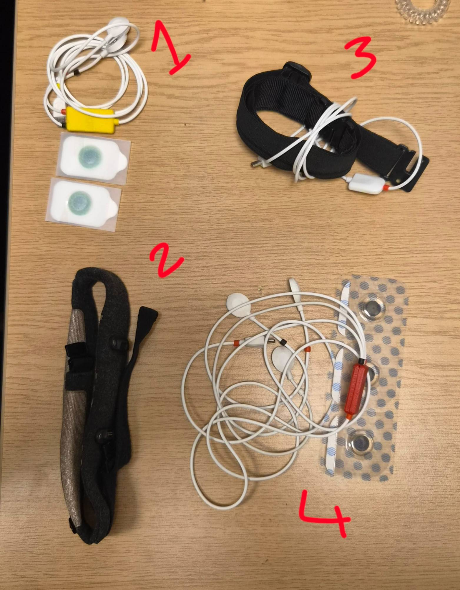
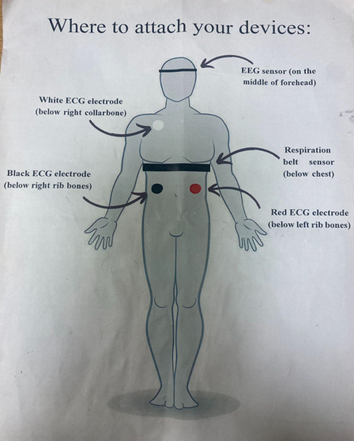
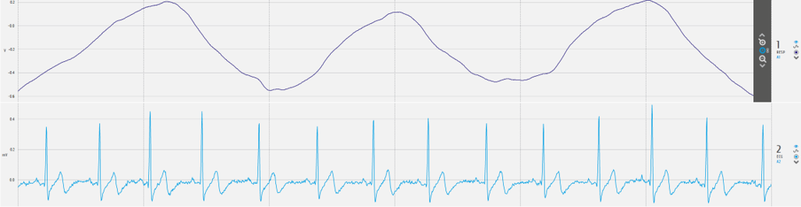
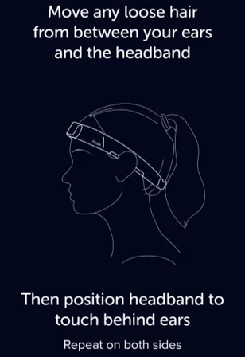
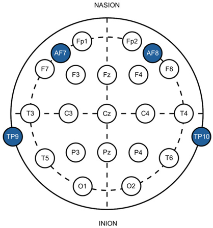
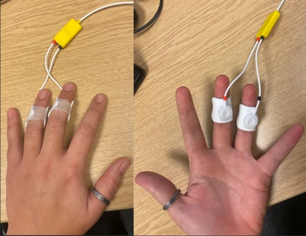

FictionEroPhysio: session checklist
Tick each step as you go. Ticks are saved in this browser, so a page refresh will not lose them. Press Reset all ticks before the next participant. More detail is in SOP_FictionEroPhysio.docx and FEP_Verbal_Instructions.pdf.
Study overview

| Signal | Device | Bitalino port |
|---|---|---|
| Respiration (RSP) | Bitalino belt | A1 |
| ECG | Bitalino, 3 electrodes | A2 |
| Photosensor (LUX) | Bitalino, taped to participant screen | A3 |
| EDA | Bitalino, 2 finger electrodes | A4 |
| EEG | Muse headband (Bluetooth) | none |
| Lab Recorder Block/Task | Task | Length |
|---|---|---|
RS | Resting state | ~8 minutes |
TAP | Tapping tasks | 6 blocks |
HCT | Heartbeat counting task | 6 trials |
FP1 | Fiction phase 1 | 50 images (break in the middle) |
Participant IDs are written as P + 3 digits: P001, P002 … P010, P011 … (check the comments file on Box for the next one).
Experimenter codes: Roisin = Exp1, Oliver = Exp2, Ana = Exp3, Ada = Exp4, Asel = Exp5.
Before the session
- Everything charged: Muse (plus spare pods), bitalino.
- "Do not disturb" sign on the outside of the door.
- Volume off on the recording machine, on on the participant's machine.
- Webcam centred on top of the participant's screen (follow the tape markers).
- Both machines on the same network (University ethernet).
- EDA isotonic gel ready: scrape off any solidified gel at the top, fill some into the syringe.
- Thermometer on.
1. Log in
2. Recording computer (experimenter computer)

-
Condition is counterbalanced (Interoception first or Fiction first): do the opposite of the previous participant.
3. Experiment machine (participant computer)
-
- Resting state:
http://localhost:8000/experiment/restingstate.html - Interoception:
http://localhost:8000/experiment/interoception.html - Fiction:
http://localhost:8000/experiment/fiction.html
- Resting state:
-
Note: when the black marker appears, the recording machine's python terminal shows marker 1; when it disappears, marker 0.
4. Back on the recording machine
-
Check ports are RESP (A1), ECG (A2), LUX (A3), EDA (A4) and sampling rate is 1000 Hz.
-

Change the highlighted fields. (The photo shows the default Study Root; use the one above.)
5. When the participant arrives
-

1 = EDA finger electrodes, 2 = Muse headband, 3 = respiration belt, 4 = ECG cables/electrodes. -

White below right collarbone; black on the last rib (right); red on the last rib (left); belt below chest. - Clip the cable onto the electrode sticker first.
- Black: on the last rib, middle of the curve (ask them to suck in to find where the ribs end). Red: parallel to black, on the last rib on the left.
- The line from white to red should cross the heart.
-
Note: the fold where the cable comes out must face the participant.
- Just below the chest, snug; sensor on the front, to the right, just below the pectoral muscles. No folded cloth by the sensor.
- Not so tight they can feel their pulse. If the signal is weak, ask for a deep breath and move the sensor to where the body moves most.
-
Bitalino not working: re-pair Bluetooth and reconnect (PIN 1234).
-

Good signals: smooth breathing wave (RSP, top), clear regular heartbeats (ECG, bottom). Show the participant how movement shows up in the signals and ask them to sit back and stay still. -

Headband touches behind both ears. 
Electrodes: AF7, AF8 (forehead), TP9, TP10 (behind ears). - Wipe their forehead and above the ears with a wipe.
- Remove glasses and tie up hair if applicable.
- While loose, clip the Muse around the participant's neck and lift it over the ears.
- EEG sensor in the centre of the forehead.
- Put a hand underneath the Muse Athena and pull up the hair above the ears on both sides.
- Tighten to a snug fit.
-
- Bluetooth off on all task-irrelevant devices (nearby phones, headphones, laptops).
- No hair in the way; electrodes touching the skin.
- Slightly dampen the skin under the electrodes with medical wipes.
-
6. Record each task
Start a new Lab Recorder recording before each task and change Block/Task each time, otherwise files get overwritten.
-
Note: EDA is only for the fiction task. Fit it when the participant gets to the fiction instructions page.

EDA on the inside of the index and middle fingers. - Connect the cable to each electrode, add tape before fitting the electrode, then add a generous drop of gel to the sponge.
- Place just below the top finger joint, massage the gel in circles, secure with tape: snug, but not so tight they feel their pulse.
- Hand still, palm down, electrodes not touching the table. Cold hands: blanket or warm water.
- Check: a sharp sniff (or a loud clap) should raise EDA. No response? Add gel with the syringe, reconnect the wire, or replace the stickers. Some people just don't respond much.
- Order: RS first, then Interoception (TAP, HCT) or Fiction depending on the condition. When a task ends, open the next .html file yourself.
- Always explain instructions out loud as well (see
FEP_Verbal_Instructions.pdf). A "ding" plays on each instruction page. - Swap Muse pods between stages if needed. After reconnecting, reopen Lab Recorder and press Update before recording.
- During the fiction break, ask for a sniff to check the EDA still responds.